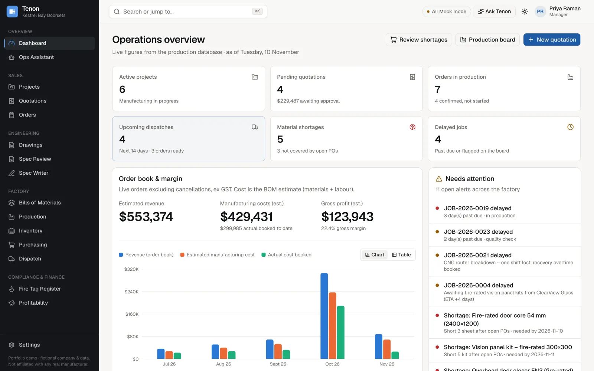
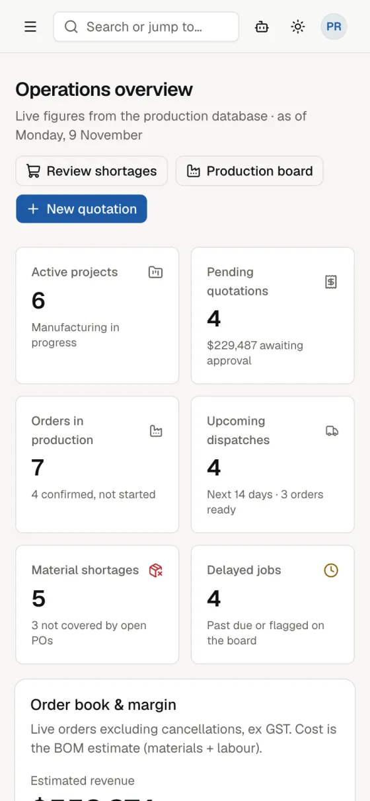

Specification review
Reads specification PDFs and flags missing information and material or hardware clashes.
- Quotes the evidence for every finding
- Shows confidence, and whether a rule or the AI found it
- Nothing is final until a manager approves
Tenon is a demo operations platform for a doorset and joinery manufacturer. Quotes, bills of materials, the factory schedule, purchasing, dispatch and fire-door records share one live database. AI does the reading and checking, and people make the decisions.

One record, end to end
An accepted quote becomes an order, a bill of materials and factory jobs in one click. Shortages, purchasing, deliveries and costs follow on from there automatically.
Guided tour
Click through the screens. Tap any screenshot to see it full size.
Active projects, quotes awaiting approval, orders in production, upcoming deliveries, shortages and late jobs. Revenue, cost and margin come straight from orders and BOMs, and anything needing attention rises to the top.
AI with a human in the loop
Each AI feature shows its working, says how confident it is, and leaves the final call to a person.
Reads specification PDFs and flags missing information and material or hardware clashes.
Drafts a manufacturing specification from product inputs for an engineer to edit, version and export.
Answers everyday questions about delays, stock, deliveries, quotes and profit.
This demo runs the AI in rule-based mode, so it works offline with predictable results. The same features can run on OpenAI, Anthropic or Gemini by changing one setting.
What's built
Every button in the demo does something real, and the totals are calculated by the system. Here's an honest picture of what it is and what it isn't.

Responsive on mobile
I'm happy to walk you through the live application, or talk about how something like this could fit your team's quoting and production workflow.